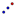

UK English: Enlarge
Dilate[Point A, Number, Point S]: Dilates point A from point S using the given factor.
Dilate[Line, Number, Point S]: Dilates the line from point S using the given factor.
Dilate[Conic, Number, Point S]: Dilates the conic section from point S using the given factor.
Dilate[Polygon,
Number, Point S]: Dilates the polygon from point S using the given factor.
Note: New vertices and segments are
created too.
Dilate[Image, Number, Point S]: Dilates the image from point S using the given factor.
Note: Also see tool  Dilate Object from Point
Dilate Object from Point
Reflect[Point A, Point B]: Reflects point A about point B.
Reflect[Line, Point]: Reflects the line about the given point.
Reflect[Conic, Point]: Reflects the conic section about the given point.
Reflect[Polygon,
Point]: Reflects the polygon about the given point.
Note: New vertices and segments are
created as well.
Reflect[Image, Point]: Reflects the image about the given point.
Reflect[Point, Line]: Reflects the point about the given line.
Reflect[Line g, Line h]: Reflects line g about line h.
Reflect[Conic, Line]: Reflects the conic section about the line.
Reflect[Polygon,
Line]: Reflects the polygon about the line.
Note: New vertices and segments are created as
well.
Reflect[Image, Line]: Reflects the image about the line.
Reflect[Point,
Circle]: Inverts the point in the circle.
Note: Also see
tools  Reflect Object about Point;  Reflect Object about Line;
Reflect Object about Line;
Reflect Point about Circle
Rotate[Point, Angle]: Rotates the point by the angle around the axis origin.
Rotate[Vector, Angle]: Rotates the vector by the angle around the starting point of the vector.
Rotate[Line, Angle]: Rotates the line by the angle around the axis origin.
Rotate[Conic, Angle]: Rotates the conic section by the angle around the axis origin.
Rotate[Polygon,
Angle]: Rotates the polygon by the angle around the axis origin.
Note: New vertices and segments are
created as well.
Rotate[Image, Angle]: Rotates the image by the angle around the axis origin.
Rotate[Point A, Angle, Point B]: Rotates point A by the angle around point B.
Rotate[Line, Angle, Point]: Rotates the line by the angle around the point.
Rotate[Vector, Angle, Point]: Rotates the vector by the angle around the point.
Rotate[Conic, Angle, Point]: Rotates the conic section by the angle around the point.
Rotate[Polygon,
Angle, Point]: Rotates the polygon by the angle around point B.
Note: New vertices and segments are
created as well.
Rotate[Image, Angle, Point]: Rotates the image by the angle around the point.
Note: Also see tool  Rotate Object around Point by Angle
Rotate Object around Point by Angle
Translate[Point, Vector ]: Translates the point by the vector.
Translate[Line, Vector]: Translates the line by the vector.
Translate[Conic, Vector]: Translates the conic by the vector.
Translate[Function, Vector]: Translates the function by the vector.
Translate[Polygon,
Vector]: Translates the polygon by the vector.
Note: New vertices and segments are
created as well.
Translate[Image, Vector]: Translates the image by the vector.
Translate[Vector, Point]: Translates the vector v to point.
Note: Also see tool  Translate Object by Vector
Translate Object by Vector